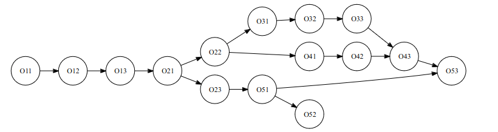

Modélisation conceptuelle des données : Modèle Entité-Association
7 jours
31
Recenser les données élémentaires du monde à modéliser pour constituer un dictionnaire de données
60
48
4
Modélisation logique des données : Modèle Relationnel
3 jours
41
Décrire les principes du modèle relationnel
60
6
5
Interrogation d’une base de données : algèbre relationnelle
3 jours
51
Écrire des requêtes d’interrogation d’une base de données relationnelles
60
72
6
Implémentation d’une base de données : Modèle physique
5.5 jours
61
Décrire les principes de la gestion informatisée d’une base de données
60
6
63
Interroger une base de données en langage SQL
75
78
12 - Graphe de précédences entre les objectifs
 Graphe de précédences entre les objectifs
13 - Consignes de travail
➢ Faites le Test d’entrée ; en principe vous devez avoir un score de 80% pour pouvoir
continuer mais cette contrainte n’est pas prise en compte.
➢ Le cours est organisé par objectifs qui s’afficheront dès que vous aurez atteint l’objectif
courant
➢ Dans chaque objectif, il faut d’abord lire le cours, ensuite la vidéo et enfin les exercices
➢ Le tout premier exercice de chaque objectif est un Test de connaissance auquel votre
note doit être égale à au moins à 80%. Vous avez la possibilité de reprendre le test
jusqu’à obtenir les 80% sinon vous ne pouvez pas progresser dans votre apprentissage
➢ Les autres exercices sont des exercices de production classiquement appelé Travaux
Dirigés ou Travaux Pratiques. Vous devez déposer votre solution pour progresser
➢ Tous les exercices ne sont pas obligatoires et le système vous donnera progressivement
les conditions d’accès à chaque exercice. Je vous recommande de faire le maximum !
➢ Vous aurez des séances de travail synchrone avec un tuteur pour des explications en
direct